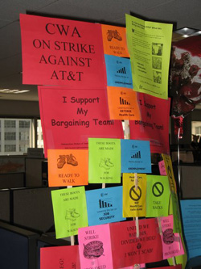

Workers at AT&T Poised to Strike - Job action would be biggest U.S. strike in recent years, and first under Obama
Submitted on Tue, 04/14/2009 - 12:45am

By x359209 - IU 560 Job Shop (dual card CWA)
IWW/CWA dual-carders in the heart of the struggle
At midnight April 5, 2009 contracts for most of the component groups represented by the Communications Workers of America (CWA) at the
telecom giant AT&T have expired. After weeks of mobilizing, around 90,000
workers are poised to strike one of the largest and most profitable
multinational corporations. A job action by CWA would be the largest and among the
most significant labor action in the United States since the UPS strike in 1997. It would also be the first major strike under the Obama regime.
The brewing confrontation could set the tone for class struggle in the
U.S. for the near future.
Attack on Healthcare
AT&T has been pressing hard for major concessions from its call
center, billing & ordering, and technical workers, especially in the area
of health care. The company is demanding harsh cost shifting in the form
of premiums and huge deductables for current employees and even steeper
cuts for “second tier” workers hired going forward. AT&T is also
demanding concessions in areas of seniority, over-time, and discipline. Raises
would be replaced for the first two years by one-time lump payments.
Billions in Profit
AT&T corporate PR hacks have been spinning that healthcare must be
reduced to avoid a repeat of what has happened to the U.S. auto industry. But
AT&T is not General Motors. It is in a growing, innovative industry - one
where AT&T bosses made $12.9 Billion in profits in 2008 alone. Besides, the
U.S. healthcare crisis and its skyrocketing costs are not the fault of
workers and their families and we should not be made to shoulder its burden. Workers at AT&T are furious that such a rich company would attack
their families’ access to healthcare.
The company has also sought to pit the different component parts of
“the new AT&T” against each other (the old Ameritech, SBC, Pac Bell,
Cingular, etc) by taking advantage of real wage and benefit gaps and separate contract expiration dates. CWA has only partially resisted these
efforts. A new contract at the fastest growing (and least compensated)
component
AT&T Wireless was approved just as negotiations were hitting the wall
for 5 of the other major groups. The Union has given up on negotiating the
old Bell South component contract, which doesn’t expire until August 2009.
By agreeing to postpone these negotiations until summer, the union has
given away more of all the workers’ leverage.
Time for Action
In the first few days after the contracts expired CWA leaders
announced that workers should report to work for now, while still expressing exasperation at the “Final offers” being pushed by AT&T. It is clear
that AT&T is advancing the same attack that has drastically reduced the
wages, benefits and power of all the core unionized sections of the
working-class (auto, steel, airlines, etc.) AT&T bosses are confident that
telecom workers can also be tamed for the international capitalist economy,
and are hardly fearful of the business unions, which have no real
experience or desire to wage militant struggle.
But there are factors that favor us, the workers, too. There is a
growing mood among workers at AT&T and throughout the class in general
that workers should not have to shoulder the bosses’ economic crisis that
the rich must pay. The issue of Healthcare is one that is on everyone’s
mind, and a group of workers seen as struggling to defend their healthcare
has
the possibility of striking a chord deep and wide across the working class. Finally, Obama was elected in no small part because workers
wanted “change”, and it will not be easy for his administration to openly
attack any emerging struggle without damaging his standing and costing him
room to maneuver.
The View from the Floor
Over the last few weeks in the Midwest call center where we work it
has been interesting to join the union mobilizations and watch the attitude
of our co-workers move quickly towards a determination to take action. A month ago any talk of a strike brought either yawns or fear from most people. As the deadline neared, however, the reality of AT&T’s demands
hit
home. At the top of the hour, union employees stand up in their
cubicles and press loud “clickers”, shake noise makers, or tap pens on their
desk in a show of solidarity. The effect is like a massive cloud of locust sweeping over the office and adds to the tense atmosphere. Groups of people discuss the latest news and share opinions about a strike. Red Union T-shirts are everywhere, and cubicles are decorated in union
flyers. Petty discipline and rule enforcement from management have sparked a
much stronger and organized reaction than usual turning “team meetings”
into heated debates.
Now there is a wide group of workers who are not only willing to
strike, but WANT to strike.
Strike to Win
If we are forced to go on strike it is important that we win. We have little confidence that the business union approach can beat such a committed and powerful adversary. It is likely that the withdrawal of
our labor alone will not be sufficient. It is clear that AT&T is prepared
to
force us to strike and has calculated the short-term losses and chaos
it is prepared to endure in order to implement the long-term cuts to
workers’ healthcare and implement a second-class tier for newly hired workers. Certainly workers with greater skill and specialization than those of
us in a call center have been replaced in strikes.
Direct action tactics like those most recently employed by the
Republic Windows workers in Chicago, who successfully blocked the sell-off of
their factory by staging an occupation/sit-in are ones we need to look at
and advocate.
The IWW @ AT&T
Among the active core of union workers in our call center is a group
of dual card I.W.W. members. The group grew out of a major struggle for greater union democracy in our CWA local about 4 years ago. We do not
try and get workers to leave or dismiss the Communication Workers, but
instead to participate in the CWA as “solidarity unionists”, fighting for
greater militancy, democracy and revolutionary analysis of the system we are
up
against. We have built support for other local struggles including in
the airlines, at the University, and for active IWW organizing campaigns
in our area. We try and create a social scene with our co-workers built
on solidarity. We do not ignore the CWA or let it exclusively define our activity. It is this mix of independent IWW organizing and dual-card organizing that really defines our GMB and points toward a successful model for bringing the IWW back to the cutting edge of the struggle
for emancipation from capitalism and the state.